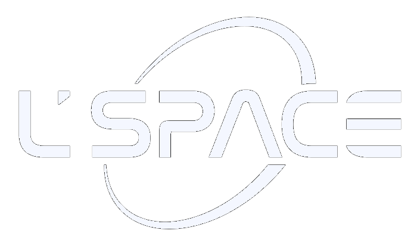

Jan 2025 – May 2025
Remote

Principal Investigator · Professional Development Training
Proposal and Writing Evaluation Experience
- Participated in a NASA-supported workforce development program focused on research proposal development, technical writing, mission concept development, and proposal evaluation using NASA-style standards and review processes.
- Received an official certificate of participation upon successful completion of the program.